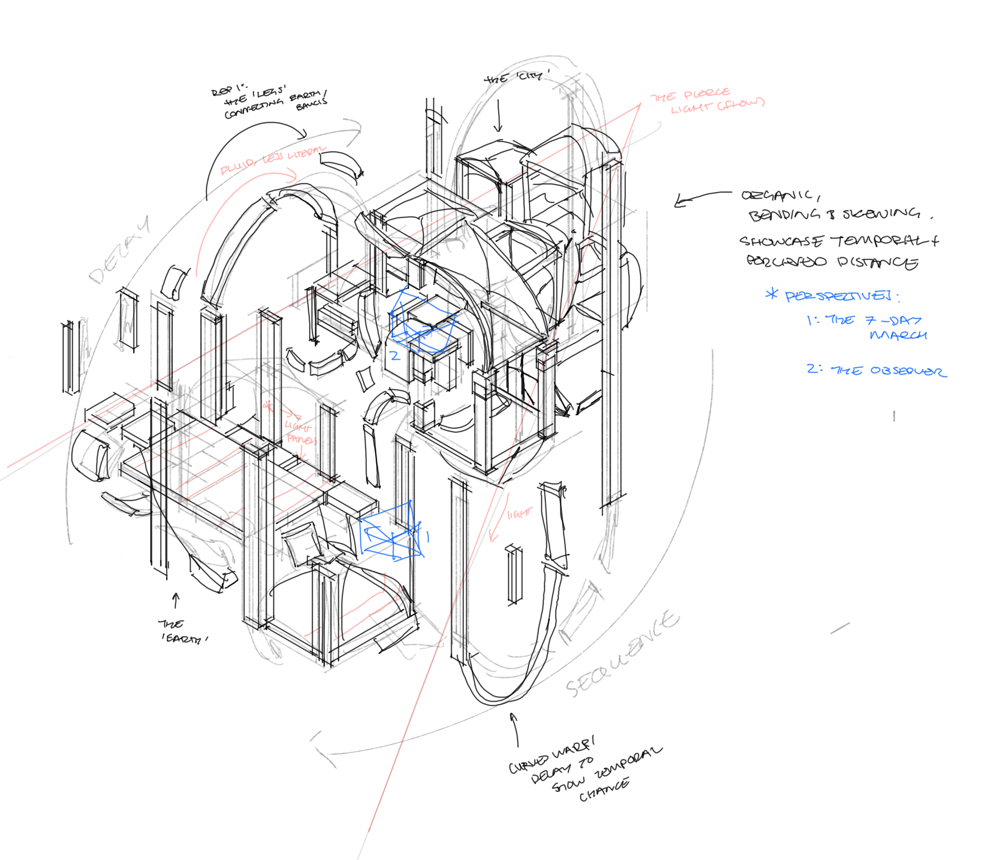

Frame Vs Field
Module three – Frame Vs Field, my most explorative approach in Fod:R, challenged me to create a conceptual and narrative-based experience through my design development. Using both digital model-making techniques to compose and manipulate the University of Melbourne’s Old Quad with a segment from Italo Calvino’s novel ‘Invisible Cities’, I delved into creating an outcome that honoured the iconic quality of its reference material, whilst extending upon the world created within City and Eyes 3: Baucis.
Origin

Through this Assessment, I explicitly considered interpreting the idea of Dramatic Irony and an unreliable narrator, stemming from the biased perspective of my source narrative. In my development, I aimed to answer three questions: What is the nature of Baucis? What is known about the city? What can I play upon the unknown about the city?
Project



Reaching the end of this assessment and subsequently, FoD:R, this process encouraged me to delve into the empirical detail that crafts the viewer’s experience. Building on an in-depth framework to enhance my 3d and 2D creative practice approach, my work emphasises a new, complex level of thinking in structural, storytelling and compositional states.